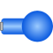

BodyRigid body with mass, inertia tensor and one frame connector (12 potential states) |

|
Information
This information is part of the Modelica Standard Library maintained by the Modelica Association.
Rigid body with mass and inertia tensor. All parameter vectors have to be resolved in frame_a. The inertia tensor has to be defined with respect to a coordinate system that is parallel to frame_a with the origin at the center of mass of the body.
By default, this component is visualized by a cylinder located between frame_a and the center of mass and by a sphere that has its center at the center of mass. If the cylinder length is smaller as the radius of the sphere, e.g., since frame_a is located at the center of mass, the cylinder is not displayed. Note, that the animation may be switched off via parameter animation = false.
States of Body Components
Every body has potential states. If possible a tool will select the states of joints and not the states of bodies because this is usually the most efficient choice. In this case the position, orientation, velocity and angular velocity of frame_a of the body will be computed by the component that is connected to frame_a. However, if a body is moving freely in space, variables of the body have to be used as states. The potential states of the body are:
- The position vector frame_a.r_0 from the origin of the world frame to the origin of frame_a of the body, resolved in the world frame and the absolute velocity v_0 of the origin of frame_a, resolved in the world frame (= der(frame_a.r_0)).
- If parameter useQuaternions in the "Advanced" menu
is true (this is the default), then 4 quaternions
are potential states. Additionally, the coordinates of the
absolute angular velocity vector of the
body are 3 potential states.
If useQuaternions in the "Advanced" menu is false, then 3 angles and the derivatives of these angles are potential states. The orientation of frame_a is computed by rotating the world frame along the axes defined in parameter vector "sequence_angleStates" (default = {1,2,3}, i.e., the Cardan angle sequence) around the angles used as potential states. For example, the default is to rotate the x-axis of the world frame around angles[1], the new y-axis around angles[2] and the new z-axis around angles[3], arriving at frame_a.
The quaternions have the slight disadvantage that there is a non-linear constraint equation between the 4 quaternions. Therefore, at least one non-linear equation has to be solved during simulation. A tool might, however, analytically solve this simple constraint equation. Using the 3 angles as states has the disadvantage that there is a singular configuration in which a division by zero will occur. If it is possible to determine in advance for an application class that this singular configuration is outside of the operating region, the 3 angles might be used as potential states by setting useQuaternions = false.
In text books about 3-dimensional mechanics often 3 angles and the angular velocity are used as states. This is not the case here, since 3 angles and their derivatives are used as potential states (if useQuaternions = false). The reason is that for real-time simulation the discretization formula of the integrator might be "inlined" and solved together with the body equations. By appropriate symbolic transformation the performance is drastically increased if angles and their derivatives are used as states, instead of angles and the angular velocity.
Whether or not variables of the body are used as states is usually automatically selected by the Modelica translator. If parameter enforceStates is set to true in the "Advanced" menu, then body variables are forced to be used as states according to the setting of parameters "useQuaternions" and "sequence_angleStates".
Parameters (22)
| animation |
Value: true Type: Boolean Description: = true, if animation shall be enabled (show cylinder and sphere) |
|---|---|
| r_CM |
Value: Type: Position[3] (m) Description: Vector from frame_a to center of mass, resolved in frame_a |
| m |
Value: Type: Mass (kg) Description: Mass of rigid body |
| I_11 |
Value: 0.001 Type: Inertia (kg·m²) Description: (1,1) element of inertia tensor |
| I_22 |
Value: 0.001 Type: Inertia (kg·m²) Description: (2,2) element of inertia tensor |
| I_33 |
Value: 0.001 Type: Inertia (kg·m²) Description: (3,3) element of inertia tensor |
| I_21 |
Value: 0 Type: Inertia (kg·m²) Description: (2,1) element of inertia tensor |
| I_31 |
Value: 0 Type: Inertia (kg·m²) Description: (3,1) element of inertia tensor |
| I_32 |
Value: 0 Type: Inertia (kg·m²) Description: (3,2) element of inertia tensor |
| angles_fixed |
Value: false Type: Boolean Description: = true, if angles_start are used as initial values, else as guess values |
| angles_start |
Value: {0, 0, 0} Type: Angle[3] (rad) Description: Initial values of angles to rotate frame_a around 'sequence_start' axes into frame_b |
| sequence_start |
Value: {1, 2, 3} Type: RotationSequence Description: Sequence of rotations to rotate frame_a into frame_b at initial time |
| w_0_fixed |
Value: false Type: Boolean Description: = true, if w_0_start are used as initial values, else as guess values |
| w_0_start |
Value: {0, 0, 0} Type: AngularVelocity[3] (rad/s) Description: Initial or guess values of angular velocity of frame_a resolved in world frame |
| z_0_fixed |
Value: false Type: Boolean Description: = true, if z_0_start are used as initial values, else as guess values |
| z_0_start |
Value: {0, 0, 0} Type: AngularAcceleration[3] (rad/s²) Description: Initial values of angular acceleration z_0 = der(w_0) |
| sphereDiameter |
Value: world.defaultBodyDiameter Type: Diameter (m) Description: Diameter of sphere |
| cylinderDiameter |
Value: sphereDiameter / Types.Defaults.BodyCylinderDiameterFraction Type: Diameter (m) Description: Diameter of cylinder |
| sequence_angleStates |
Value: {1, 2, 3} Type: RotationSequence Description: Sequence of rotations to rotate world frame into frame_a around the 3 angles used as potential states |
| I |
Value: [I_11, I_21, I_31; I_21, I_22, I_32; I_31, I_32, I_33] Type: Inertia[3,3] (kg·m²) Description: inertia tensor |
| R_start |
Value: Modelica.Mechanics.MultiBody.Frames.axesRotations(sequence_start, angles_start, zeros(3)) Type: Orientation Description: Orientation object from world frame to frame_a at initial time |
| z_a_start |
Value: Frames.resolve2(R_start, z_0_start) Type: AngularAcceleration[3] (rad/s²) Description: Initial values of angular acceleration z_a = der(w_a), i.e., time derivative of angular velocity resolved in frame_a |
Inputs (3)
| sphereColor |
Default Value: Modelica.Mechanics.MultiBody.Types.Defaults.BodyColor Type: Color Description: Color of sphere |
|---|---|
| cylinderColor |
Default Value: sphereColor Type: Color Description: Color of cylinder |
| specularCoefficient |
Default Value: world.defaultSpecularCoefficient Type: SpecularCoefficient Description: Reflection of ambient light (= 0: light is completely absorbed) |
Connectors (1)
| frame_a |
Type: Frame_a Description: Coordinate system fixed at body |
|---|
Components (4)
| R_start |
Type: Orientation Description: Orientation object from world frame to frame_a at initial time |
|
|---|---|---|
| world |
Type: World |
|
| cylinder |
Type: Shape |
|
| sphere |
Type: Shape |
Used in Examples (13)
|
Modelica.Mechanics.MultiBody.Examples.Elementary Demonstrate line force with two point masses using a JointUPS and alternatively a LineForceWithTwoMasses component |
|
|
Modelica.Mechanics.MultiBody.Examples.Elementary Simple pendulum with one revolute joint and one body |
|
|
Modelica.Mechanics.MultiBody.Examples.Elementary Simple spring/damper/mass system |
|
|
Modelica.Mechanics.MultiBody.Examples.Elementary Two point masses in a point gravity field |
|
|
Modelica.Mechanics.MultiBody.Examples.Elementary Simple spring/damper/mass system |
|
|
Modelica.Mechanics.MultiBody.Examples.Elementary Mass attached with a spring to the world frame |
|
|
Modelica.Mechanics.MultiBody.Examples.Elementary Point mass hanging on a spring |
|
|
Modelica.Mechanics.MultiBody.Examples.Elementary 3-dim. springs in series and parallel connection |
|
|
Modelica.Mechanics.MultiBody.Examples.Elementary Rolling wheel set that is driven by torques driving the wheels |
|
|
Modelica.Mechanics.MultiBody.Examples.Elementary Rolling wheel set that is pulled by a force |
|
|
Modelica.Mechanics.MultiBody.Examples.Elementary Demonstrate the modeling of heat losses |
|
|
Modelica.Mechanics.MultiBody.Examples.Elementary Demonstrate the modeling of a user-defined gravity field |
|
|
Modelica.Mechanics.MultiBody.Examples.Loops Mechanism with three planar kinematic loops and one degree-of-freedom with analytic loop handling (with JointRRR joints) |
Used in Components (5)
|
Modelica.Mechanics.MultiBody.Parts Rigid body with mass, inertia tensor, different shapes for animation, and two frame connectors (12 potential states) |
|
|
Modelica.Mechanics.MultiBody.Parts Rigid body with box shape. Mass and animation properties are computed from box data and density (12 potential states) |
|
|
Modelica.Mechanics.MultiBody.Parts Rigid body with cylinder shape. Mass and animation properties are computed from cylinder data and density (12 potential states) |
|
|
Modelica.Mechanics.MultiBody.Parts Ideal rolling wheel on flat surface z=0 (5 positional, 3 velocity degrees of freedom) |
|
|
Modelica.Mechanics.MultiBody.Parts Ideal rolling wheel set consisting of two ideal rolling wheels connected together by an axis |
Extended by (1)
|
Modelica.Mechanics.MultiBody.Examples.Elementary.PointGravityWithPointMasses2.SystemWithStandardBodies Body used at all places of the comparison model with zero inertia tensor |